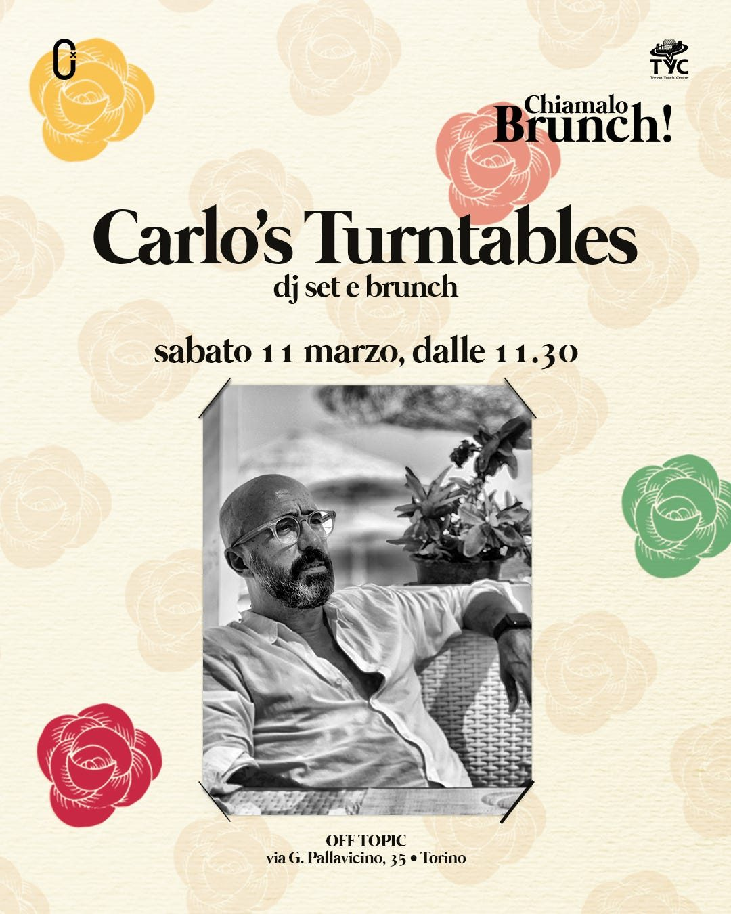

Carlo De Marchis · Selector · Torino
selectazzz
Spiritual jazz, nu-jazz, electronic music, house and world music. Mostly vinyl, now in hybrid mode with digital versions of his own tracks and new music. Four hours or more. No beat matching.
- Sets
- 39
- Venues
- 12
- Records
- 2,000+
- Since
- 2022

01About
Selectazzz is Carlo De Marchis behind the turntables: the selector sets he has played as Carlo's Turntables since October 2022, built on his collection of more than 2,000 records and running four hours or more.
The sets are mostly vinyl. They now also run in hybrid mode, adding digital versions of his own tracks, released on his label NEOM Records, and new music.
Each vinyl selection is prepared in advance to fit in one UDG bag, so it can hold more than one track from the same record. It is put together to be played on a Mastersounds Radius Two Valve mixer, and tracks from the same record never follow each other.
The selection is done by hand, starting from physical records: the other side of his work in AI and generative AI. Most of the nights are in Torino, and in May 2024 he played an all-vinyl selector set at Studio151, a listening bar in Alphabet City, New York.
Records come from
- Militant Sound, Torino
- Sounds of the Universe, London
- Phonica, London
- Kagoshima, Napoli
- Serendeepity, Milano
02Sets
39 sets, numbered in the order played. Each one links to where it was posted.
Most played
- Vermoutheria Pelitis14
- Ailime'07
- 100 Vini & Affini, Green Pea02
- Affini02
20261 set
20251 set
202415 sets
- 03728.10Vermoutheria PelitisMurazzi, Torino
- 03625.09Private event, LIFTTItalian Tech Week, Torino
- 03521.09Emmestudio openingDocks Dora, Torino
- 03419.09Private event, Casa delle LampadineTorino
- 03316.09Vermoutheria PelitisMurazzi, Torino
- 03215.06Vermoutheria PelitisMurazzi, Torino
- 03129.05Studio151All-vinyl selector set at a listening barAlphabet City, New York
- 03011.05Vermoutheria PelitisMurazzi, Torino
- 02921.04Art opening, Laura Milani
- 02820.04Vermoutheria PelitisMurazzi, Torino
- 02716.03Vermoutheria PelitisMurazzi, Torino
- 02628.02AffiniSan Salvario, Torino
- 02517.02Vermoutheria PelitisMurazzi, Torino
- 02410.02Vermoutheria PelitisMurazzi, Torino
- 02307.02AffiniSan Salvario, Torino
202319 sets
- 02231.12Private partyTorino
- 02127.12Private partySan Salvario, Torino
- 02022.12Vermoutheria PelitisMurazzi, Torino
- 01916.12Vermoutheria PelitisMurazzi, Torino
- 01812.12Vermoutheria PelitisMurazzi, Torino
- 01725.11Vermoutheria PelitisMurazzi, Torino
- 01617.11Faber meeting, Toolbox CoworkingTorino
- 01511.11Vermoutheria PelitisMurazzi, Torino
- 01413.10Vermoutheria PelitisMurazzi, Torino
- 01305.10100 Vini & Affini, Green Pea100 ViniliTorino
- 012··.··Private open-air party
- 01114.07Lumen GourmetOpen air
- 01012.05Ailime'Torino
- 00914.04100 Vini & Affini, Green Pea100 ViniliTorino
- 00813.04Ailime'Torino
- 00718.03Private open-air party
- 00611.03OffTopicDJ set and brunchTorino
- 00509.03Ailime'Torino
- 00426.01Ailime'Torino
20223 sets
03Photos


